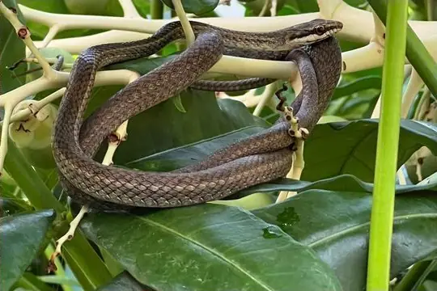
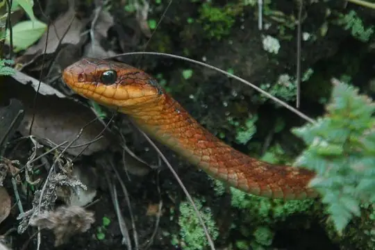
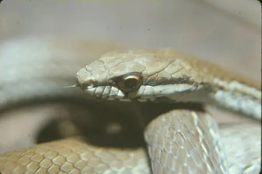

Mastigodryas
The genus Mastigodryas (family Colubridae) has 13 species in SnakeList (none venomous), recorded in 17 countries.
- 13species
- 13non-venomous
- 17countries
Species
Showing 13 species
- No photo yetAmaral's Tropical RacerMastigodryas amarali

Barbour's Tropical RacerMastigodryas bruesi Boddaert's Tropical RacerMastigodryas boddaerti
Boddaert's Tropical RacerMastigodryas boddaerti Central America Lizard EaterMastigodryas alternatus
Central America Lizard EaterMastigodryas alternatus
Clifton's Lizard EaterMastigodryas cliftoni Cope's Tropical RacerMastigodryas pulchriceps
Cope's Tropical RacerMastigodryas pulchriceps Daniel's Tropical RacerMastigodryas danieli
Daniel's Tropical RacerMastigodryas danieli Heath's Tropical RacerMastigodryas heathii
Heath's Tropical RacerMastigodryas heathii Plee's Tropical RacerMastigodryas pleii
Plee's Tropical RacerMastigodryas pleii Salmon-bellied racerMastigodryas melanolomus
Salmon-bellied racerMastigodryas melanolomus Striped Lizard EaterMastigodryas dorsalis
Striped Lizard EaterMastigodryas dorsalis
Mastigodryas moratoi Mastigodryas reticulatus
Mastigodryas reticulatus
No snakes in Mastigodryas match.
About the genus Mastigodryas
- Family: Colubridae.
- Recorded in: Belize, Bolivia, Brazil, Colombia, Costa Rica, Ecuador, El Salvador, Grenada, Guatemala, Guyana, Honduras, Mexico, Nicaragua, Panama, Peru, Saint Vincent and the Grenadines, Venezuela.